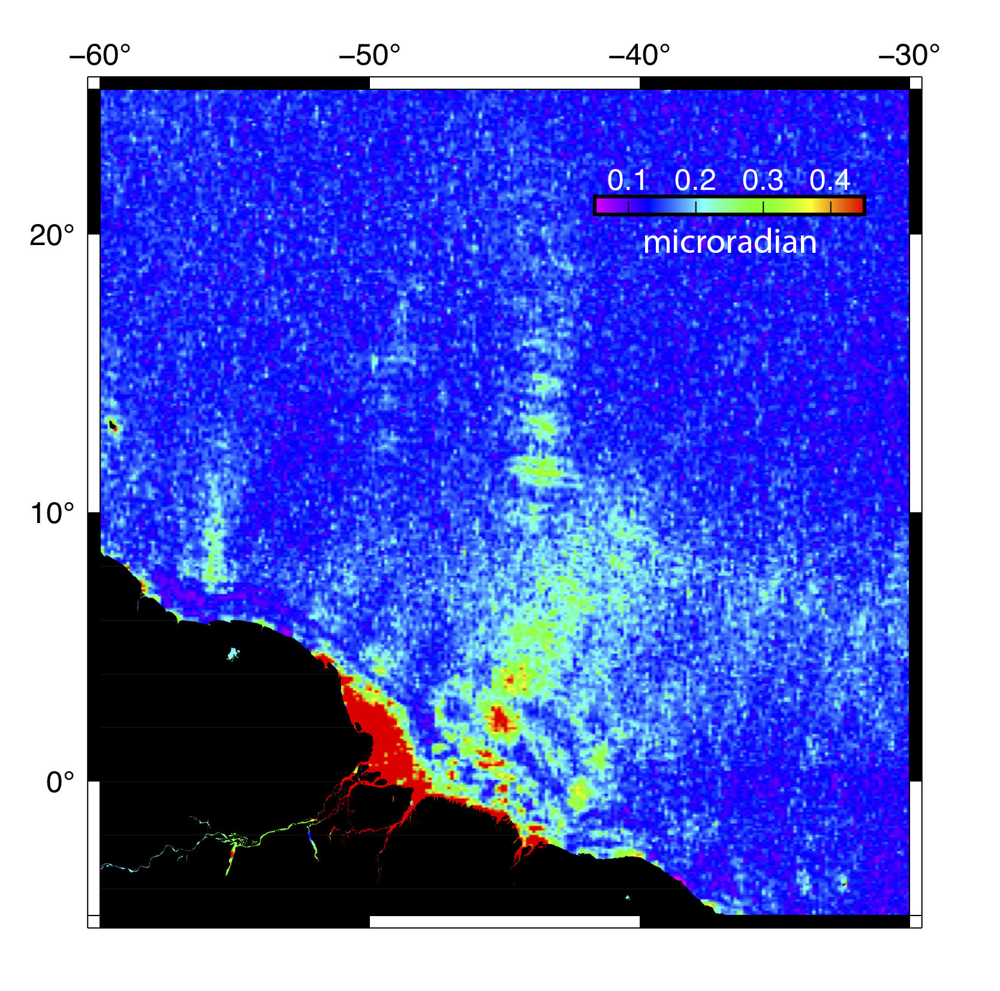
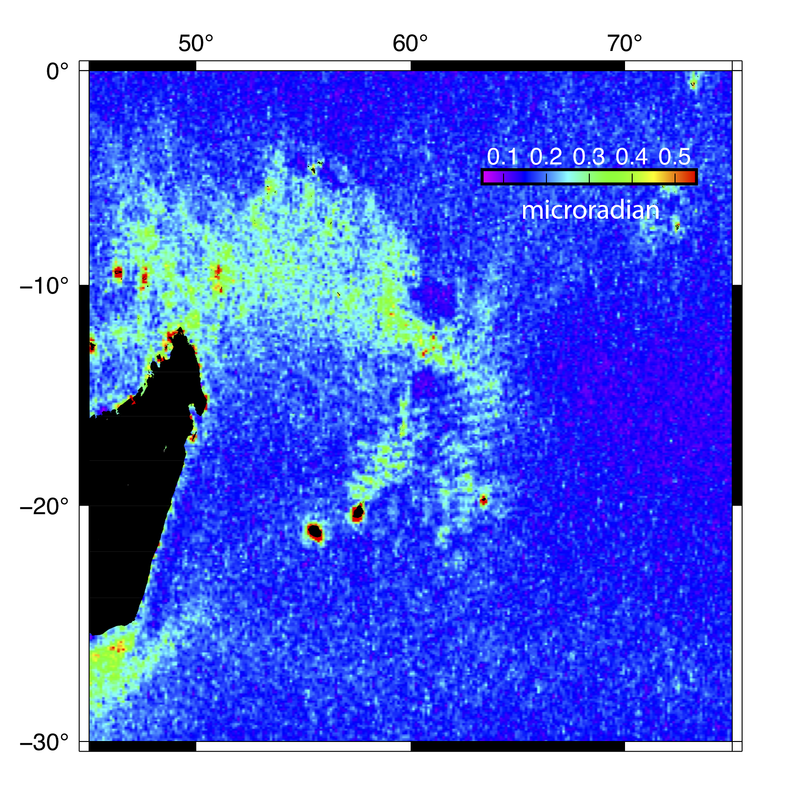
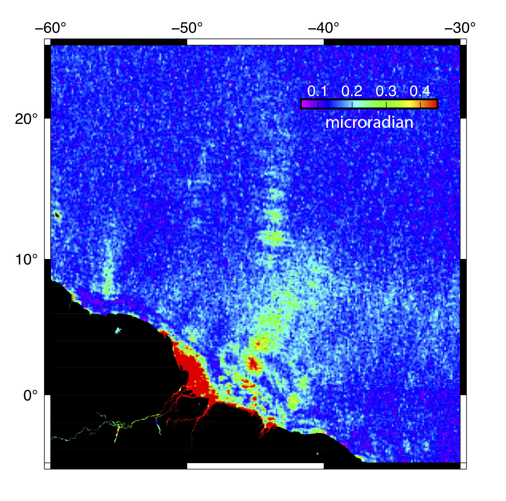
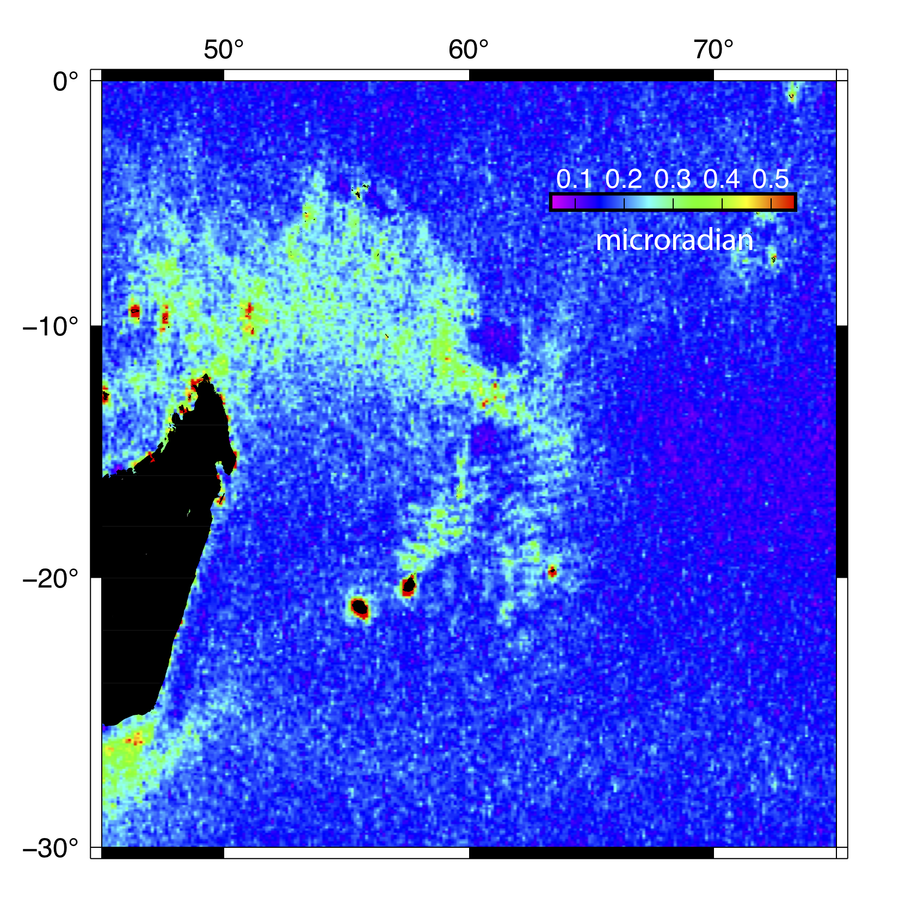

Here are more details on my current and past research projects.
Mesoscale Oeanic Variability from Satellite Altimetry
Satellite altimetry has revolutionized our understanding of oceanic processes yet the spatial resolution of the sea surface height is generally limitted by the wide cross-track spacing. Here we use both non-repeat and repeat altimeter data (from Geosat, Envisat, Jaon-1/2, Cryosat-2, SARAL/Altika and Sentinel-3) to explore sea surface variations for wavelength from 30 to 200 km. We present surface slope variations with respect to the best mean slope map (version name V28). The latter is what geophysicists are interested in while the former serves as noise. By projecting slopes to north and east directions, we can construct gravity anomaly in the vertical direction then transfer it to seafloor topography. However, for oceanographers, slope variability shows detailed oceanic signals that are associated with geostrophy, tides and internal waves. We construct along track slope to "whiten" the power spectra of along track slope profiles. We band-pass filter each profile to show oceanic variability at different spatial scales. The slope variability maps we present do not have temporal variation but with high spatial resolution of up to 30 km.
 


